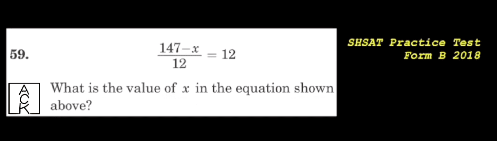

One Flashcard at a Time
Thursday January 29th, 2026
One of the most powerful ways to learn is by creating and using flashcards. Take a topic, dissect it into its most atomic parts, and write a question on one side and the answer on the other. Then, just practice those flashcards. The logistics are very simple.
However, in practice, you’ll quickly stumble. Depending on what you’re learning, and why you’re learning it, the depth and detail of how you create your flashcard stack can become overwhelming.
Let’s say your child is practicing math problems for the SHSAT.

Ask yourself (or your child): how many flashcard style questions could you create based on this single math problem? Take 5 minutes to try it out!
Here are some of my flash card questions:
- What am I solving for?
- What does it mean to balance an equation?
- How do you get rid of the denominator that is dividing the variable?
- Why am I multiplying both sides of the equation by 12?
- What is the next step in solving: 147-x= 144
- Is this correct: 3-x= 0
If you participated in this exercise and came up with similar questions, you’re on the right track; you probably know how to solve a problem like this. But here is the catch: it’s possible to make effective flashcards when you already know how to get to the solution.
For a student struggling with the problem above, they see it like it’s a foreign language (it really is!) and they aren’t able to ask the questions that are worth answering. They might look at the same problem above and write these as flashcards:
- What is the number on the bottom of the fraction?
- What is the number after the equals sign?
- Is there an x in the problem?
- What is the very first number in the top part?
While technically correct questions to ask as it relates to the problem, it doesn’t build an understanding of how to approach and eventually solve the problem. Even with the flashcard questions I created for that problem, a student might read it and think to themselves ‘balance an equation … I don’t even know what that means … what’s a variable … denominator … I don’t remember …’ Math is a great tool to learn this skill of problem deconstruction, because most, if not all problems, students face in school have solutions. Definitions are precise and concepts connect to schemas that continuously build a network of connections that all relate to each other. This is one of the many beautiful aspects of mathematics.
When learning a new topic, asking questions worth answering is not so obvious, especially for a young learner. This is especially true if the topic requires prior knowledge, repeated practice and a path towards mastery. For concepts to click, many micro skills need to be individually mastered and then, by the learner's intuition, stacked on top of each other as the math gets more complex.
On our youtube channel (@ackacademy) I have created many playlists of these micro skills, video flashcards that can aid in filling in those gaps that students may not even know they have. These are short form videos covering specific math definitions, concepts, problems, mistakes, and more. By following the playlist in the correct order, pausing the video to think, and answering the question on paper, you learn by doing. The key is to stay active in the learning process and not succumb to the habit of passive consumption. If you click a random video and don’t know what the question is asking, just go back to a previous video flashcard. It gives the student freedom to start where they are, not where they should be. All the video flashcards are short and direct enough such that scrolling through them feels just like going through a physical deck of flashcards.
If you’re struggling to answer the question, watch the full video for a thorough explanation and really pay attention, especially your first time watching. Understand what is being communicated and try to answer the question again. Save these specific video flashcards to a new youtube playlist and revisit them intentionally over time. When these questions are practiced regularly, I really do believe it is the best tool to learn math quickly and effectively.
When individual concepts and definitions are thoroughly understood, harder, more involved problems become like a jigsaw puzzle where the student has access to all the pieces in order to solve the problem. In school, those same individual pieces might be lost within the pace of the curriculum or never fully mastered, making those harder problems impossible to understand and solve. For math to make sense and excite students, they need to have all the pieces accessible to them such that they can attempt to assemble the jigsaw puzzle.
Each video flashcard is like a small piece of the puzzle; master each individually, and suddenly the pieces want to click together to solve the problem. We hope you check out the channel and share it with your child to aid in their math learning journey.
As always, if you have any feedback on your experience using the video flashcards, we’d love to hear from you: info@ackacademy.org.